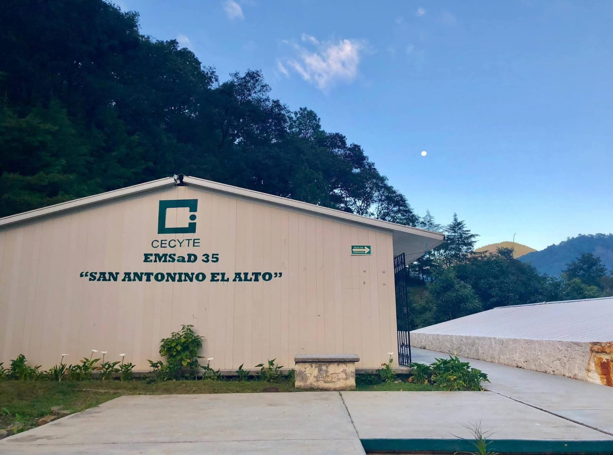

EMSaD 35
San Antonino el Alto, Oaxaca
San Antonino el Alto, Oaxaca

Educación, innovación y excelencia académica.
Formar estudiantes con valores y competencias.
Ser una institución reconocida por su calidad educativa.
Educación Media Superior
Proyectos P.E.C.
Habilidades Digitales
Actividades Deportivas
Actividades Culturales
Formación en Valores
El EMSaD 35 de San Antonino el Alto brinda educación media superior de calidad, formando jóvenes comprometidos con su comunidad.
El EMSaD 35 de San Antonino el Alto ha contribuido a la formación académica de jóvenes de la comunidad, promoviendo valores, responsabilidad social y excelencia educativa.
El EMSaD 35 cuenta con docentes comprometidos con la formación académica y humana de los estudiantes, promoviendo valores, responsabilidad y excelencia educativa.
Respeto
Responsabilidad
Innovación
Solidaridad
Continuamos desarrollando proyectos comunitarios enfocados en el bienestar animal y la salud comunitaria.
Proyecto de cuidado animal que promueve la conciencia y responsabilidad en la comunidad.
Participación activa en campañas, actividades deportivas y proyectos educativos.
Estudiantes
Docentes
Proyectos realizados
EMSaD 35
San Antonino el Alto, Oaxaca